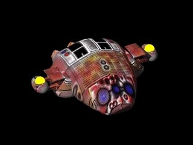

Cerberus 102

In-game info panel
- Speed:
- 100 km/h
- Energy (HP):
- 225
- Sight range:
- 350 m
- Production time:
- 16 s
| Weapon | Power | Range | Targets |
|---|---|---|---|
| Low-calibre Needle Gun | 12 | 1-6 | GA |
| Rocket Launcher | 10 | 2-11 | GA |
Costs: Extract 1000 Iron 600 Carbon 300 Titanium 0
Description
A heavy recon/attack vehicle equipped with integrated heavy needle guns and a needle grenades launcher. Its task, apart from detecting enemy fire, is to support attacking infantry units and bombing aircraft. Mass production of this vehicle kicked off after the Earth conquest, and as a result it slow in comparison with its other specifications. This unit has never been battle tested; therefore the current battles will be a baptism by fire for the unit.
Related
- Requires
- Heavy Factory, Mother
- Produced by
- Heavy Factory
- Transported by
- Dragorgon
- Weapons
- Low-calibre Needle Gun (slot 0), Rocket Launcher (slot 1)
- Upgraded by
- Phase Shield, Flow Engine
Config values not shown in game (8)
HUMAN- 3
TRACE- 1
AILEVEL- 1
TURN_SPEED- 0.016
AIUNIT- AIUNIT_JEEP
SOLDIER_TYPE- SOLDIERTYPE_UNKNOWN
INDEPENDENT- nigdy
TYPE- R_aPOJAZD